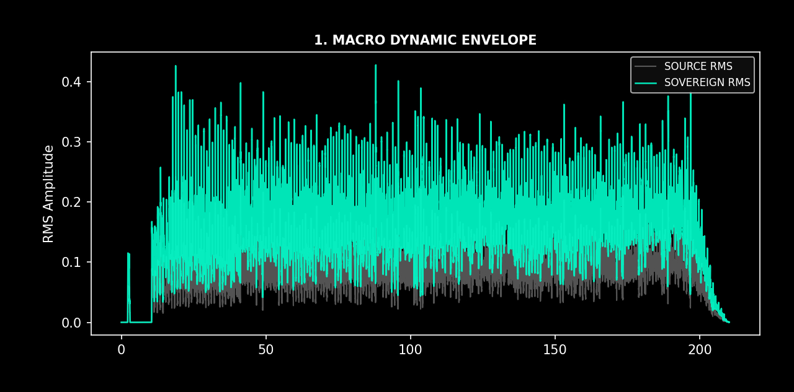
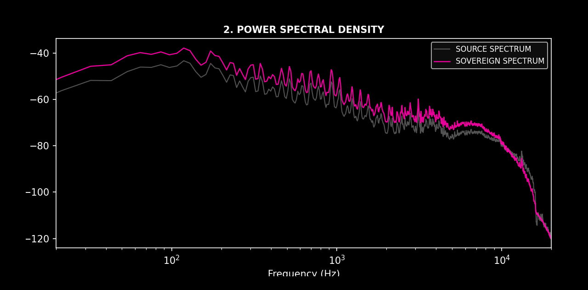
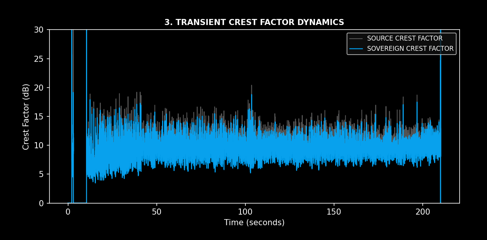
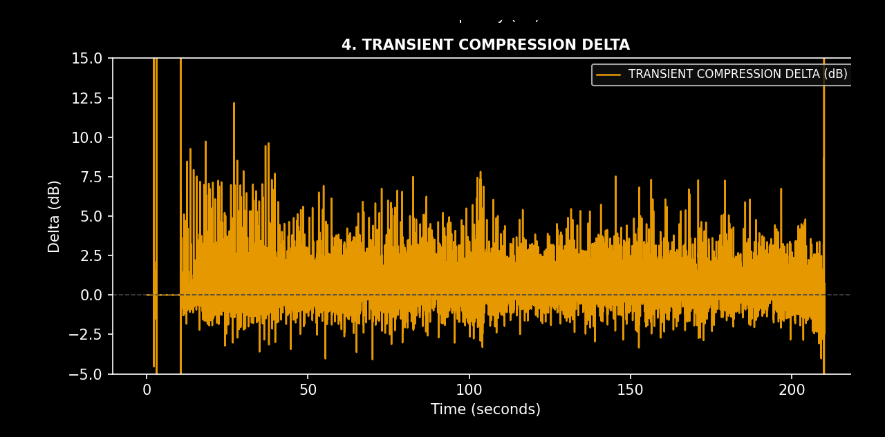

DETERMINISTIC AUDIO CONDITIONING INFRASTRUCTURE FOR PROFESSIONAL DEPLOYMENT
Modern digital production workflows—including DAW exports, AI-generated material, lossy compression, streaming masters, and legacy PCM recordings—can exhibit brittle transients, diffuse stereo imaging, inconsistent low-frequency authority, and listener fatigue. Sovereign™ introduces a deterministic conditioning stage that restructures these behaviors prior to final deployment.
Crucially, Sovereign™ operates via a dual-emission architecture: every processing pass simultaneously generates both the peak-bounded deployment master (.wav) and a high-resolution 4-pane structural engineering audit artifact. The audit is not an optional post-process report—it is a parallel diagnostic evidence layer emitted directly from the conditioned signal state.
| Source Material | Typical Problems | Expected After Sovereign |
|---|---|---|
| AI music | Brittle highs, unstable stereo | Smoother transients, stronger image |
| AI speech | Thin, synthetic voice | Increased vocal body |
| MP3 / Compressed | Codec glare | Smoother upper spectrum |
| DAW export | Flat center | Greater center focus |
| Streaming master | Listener fatigue | More relaxed presentation |
| Legacy PCM | Inconsistent tonal density | Improved spectral cohesion |
| Property | Sovereign Engine State |
|---|---|
| Offline processing | ✓ |
| Repeatable output | ✓ |
| Fixed processing pipeline | ✓ |
| No adaptive AI inference | ✓ |
| Consistent deployment masters | ✓ |
| Simultaneous dual-emission audit | ✓ |
| Incoming Condition | Sovereign Response |
|---|---|
| Brittle transient edges | Envelope-derivative transient reconstruction |
| Thin center image | Mid-band body reconstruction |
| Weak bass foundation | Resonant LF reinforcement |
| Spatial instability | Mid/Side restructuring |
| Digital harshness | Memory-based saturation |
| HF glare | Mass-controlled reconstruction filtering |
| Variable delivery level | Peak-controlled deployment master |
| Unknown processing outcome | Integrated 4-pane engineering audit image |
| Conventional Tool Category | Primary Function | Operating Principle | Limitation | Sovereign™ Differentiation |
|---|---|---|---|---|
| EQ | Frequency amplitude adjustment | Static gain changes across frequency bands | Does not reconstruct time behavior or signal density | Conditions spectral behavior as part of a larger deterministic structural pipeline |
| Compressor / Limiter | Dynamic range control | Gain reduction based on amplitude thresholds | Controls level but does not address spatial or harmonic organization | Preserves deployment level while restructuring transient and density relationships |
| Saturator | Harmonic generation | Nonlinear waveform distortion | Adds harmonic coloration but lacks structural analysis | Uses controlled nonlinear conditioning with state memory inside a documented pipeline |
| Exciter | High-frequency enhancement | Adds synthesized upper harmonics | Often increases presence but may increase fatigue | Conditions perceived clarity through coordinated spectral and temporal restructuring |
| Stereo Enhancer | Spatial widening | Phase, delay, or M/S manipulation | Can enlarge image without improving source coherence | Applies spatial restructuring as one stage within full signal conditioning |
| Transient Designer | Attack/sustain modification | Envelope shaping | Alters dynamics without addressing tonal architecture | Rebalances transient behavior relative to overall signal topology |
| Mastering Chain | Final polish | Collection of independent processors | Results depend on operator choices and undocumented settings | Produces repeatable deployment masters with generated engineering artifacts |
| System Type | Sovereign State |
|---|---|
| Audio effect | No |
| Creative coloration tool | No |
| Adaptive AI processor | No |
| Mastering preset | No |
| Deterministic conditioning system | Yes |
| Signal architecture transformation layer | Yes |
| Deployment validation system | Yes |

Visualizes the macro RMS amplitude contour over time, comparing the unconditioned source trace against the Sovereign conditioned output to map overall energy density and dynamic profile adaptation.

Evaluates frequency distribution and spectral tilt using Welch's method across the full audio band, tracking energy shifts and spectral cohesion between the source and Sovereign spectrum.

Tracks the true peak-to-RMS ratio over time in decibels, contrasting source crest factor variance with the stabilized Sovereign envelope behavior to ensure bounded operational limits.

Maps the precise differential variance (delta) of the crest factor over time, exposing nonlinear clamping events, transient punch-through behavior, and algorithm stability.
| Source Characteristic | Observed Result |
|---|---|
| AI generated music | More coherent stereo organization |
| AI voice | Increased vocal body |
| Streaming masters | Reduced perceived glare |
| DAW exports | Improved transient cohesion |
| Legacy PCM | Increased spectral continuity |
| Dense mixes | Greater center definition |
| Thin playback systems | Increased low-frequency authority |